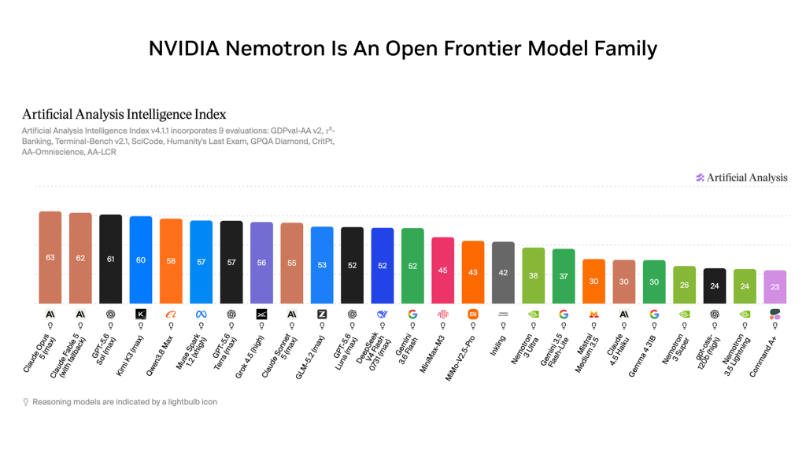

05 The New Stack 게시일 2026.08.11
Nvidia, 30B Nemotron과 라우팅 라이브러리 내놨다

Nvidia가 같은 날 모델과 라우팅 도구를 함께 발표했다. 모델은 Nemotron 3.5 Lightning이다. 도구는 NeMo Switchyard다. 회사는 이번 발표의 초점을 최고 성능 경쟁보다 속도와 맞춤화에 뒀다.
핵심 브리핑
Nvidia는 Nemotron 3 계열의 새 오픈 모델인 Nemotron 3.5 Lightning을 출시했다. 이 모델은 30-billion-parameter MoE 모델이다. Nvidia는 reasoning 성능이 더 큰 Nemotron 3 Super에 근접한다고 설명했다. 다만 Artificial Analysis의 Intelligence Index에서는 Google의 Gemma 4 31B가 비슷한 크기 모델 중 더 앞섰다.
Nvidia는 이번 모델의 강점으로 속도와 사후학습을 내세웠다. 회사는 출력 속도가 최대 4x 빠르다고 밝혔다. 고객에게 조기 접근 권한을 주고, 전문 업무에 맞춘 사후학습도 진행했다. Nvidia는 이 과정에서 정확도가 크게 올랐고, 일부 파트너 업무에서는 기존 오픈 모델이나 상용 모델보다 나은 결과가 나왔다고 전했다.
Nvidia는 함께 NeMo Switchyard도 공개했다. 이 도구는 오픈소스 모델 라우팅 라이브러리다. 기존 라우터와 AI 게이트웨이가 이 라이브러리를 이미 통합하고 있다고 밝혔다.
- Nemotron 3.5 Lightning: 30-billion-parameter MoE
- 출력 속도: 최대 4x 빠름
- 배포처: Hugging Face, ModelScope, OpenRouter, build.nvidia.com
- 제공 형태: Nvidia NIM microservice
- Switchyard 구현 언어: Rust
- 통합 중인 예시: Kong, OpenRouter, LiteLLM
Switchyard는 API로 붙는 구조다. 개발자는 모델 풀을 정하고, 품질·지연·비용 기준으로 라우팅 정책을 조정할 수 있다. Nvidia는 코딩 에이전트 학습용 agentic reinforcement learning 데이터셋도 함께 공개했다.


스펙과 도입 조건
이번 발표는 오픈 모델과 오픈소스 라우터를 묶어 제시했다. 모델은 소형 실행 담당으로, 라우터는 작업 분배 담당으로 놓는 구조다. Nvidia는 이 조합이 기존 스택에 큰 변경 없이 들어가도록 설계했다고 설명했다.
도입 관점에서 눈에 띄는 점은 배포 경로가 넓다는 부분이다. Nemotron 3.5 Lightning은 Hugging Face와 OpenRouter에서 바로 쓸 수 있다. build.nvidia.com에서는 NIM microservice 형태로도 제공한다. Switchyard는 Rust로 작성됐지만, 사용자는 API로 붙기 때문에 기존 애플리케이션 스택에 넣기 쉽다는 설명이다.
비용 절감 수치도 함께 제시했다. Nvidia 내부 벤치마크에서는 오픈 모델 몇 개와 Anthropic Opus 4.8을 섞은 라우팅 구성이 frontier급 정확도를 유지하면서 작업 완료 비용을 Opus 단독의 대략 3분의 1 수준으로 낮췄다. LangChain은 145개 multi-turn Deep Agents 작업에서 호출의 7%만 frontier 모델로 보내 비용을 74% 낮췄다고 밝혔다. 다만 정확도는 6% 낮아졌다. Ramp는 내부 SWE-Bench에서 frontier 모델과 같은 성능을 맞추면서 비용은 58%, 실행 시간은 33% 줄였다고 전했다.
| 사례 | 비교 기준 | 비용 변화 | 정확도 변화 | 실행 시간 변화 |
|---|---|---|---|---|
| Nvidia 내부 벤치마크 | Opus 단독 대비 | roughly a third | frontier-level accuracy 유지 | - |
| LangChain | 145 multi-turn Deep Agents tasks | 74% lower costs | 6% accuracy tradeoff | - |
| Ramp | internal SWE-Bench | 58% | matched a frontier model’s performance | 33% |
업계의 움직임
Nvidia는 CrowdStrike, CodeRabbit 같은 파트너와 함께 전문 업무용 사후학습 결과를 소개했다. Kong, OpenRouter, LiteLLM 같은 기존 라우터·게이트웨이도 Switchyard 통합에 나섰다. 같은 사건은 MarkTechPost와 Reddit r/LocalLLaMA에서도 함께 다뤘다. 커뮤니티와 매체 모두 오픈 모델과 라우팅 조합에 관심을 보인 셈이다.
시사점과 체크포인트
우리 회사가 생성형 AI를 여러 업무에 붙인다면, 단일 대형 모델만 보는 접근은 비용이 빠르게 커질 수 있다. 질의 분류, 문서 요약, 코드 보조, 고객 응대 초안처럼 업무를 나눠서 모델별로 배치하는 운영 설계가 먼저 필요하다.
검토할 팀은 AI 플랫폼, 인프라, 보안, 업무 시스템 운영 조직이다. 특히 어떤 요청을 외부 상용 모델로 보내고, 어떤 요청을 오픈 모델이나 사내 모델로 처리할지 정책을 정해야 한다. 라우터를 넣을 때는 품질 기준과 지연 기준, 비용 한도를 함께 설정해야 한다.
확인할 질문도 분명하다.
- 우리 업무 중 사후학습으로 정확도를 올릴 수 있는 반복 업무가 무엇인가
- 모델 라우팅 기준을 누가 관리하고, 변경 이력을 어떻게 남길 것인가
- 외부 게이트웨이와 API 연동 시 로그와 프롬프트가 어디에 저장되는가
- 오픈 모델을 도입할 때 라이선스와 배포 책임을 누가 맡을 것인가
원문에는 Nemotron 3.5 Lightning의 세부 라이선스 조건, 하드웨어 요구, 정확도 벤치마크 전체표는 없다. 도입 판단 전에는 이 빈칸을 따로 확인해야 한다.
주요 용어
원문 정보
제목: Nvidia launches a smaller, faster Nemotron model and a router to put it to work
게시일: 2026.08.11
출처 URL: https://thenewstack.io/nvidia-nemotron-lightning-switchyard/